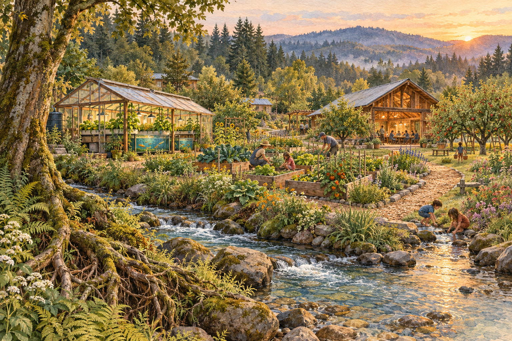
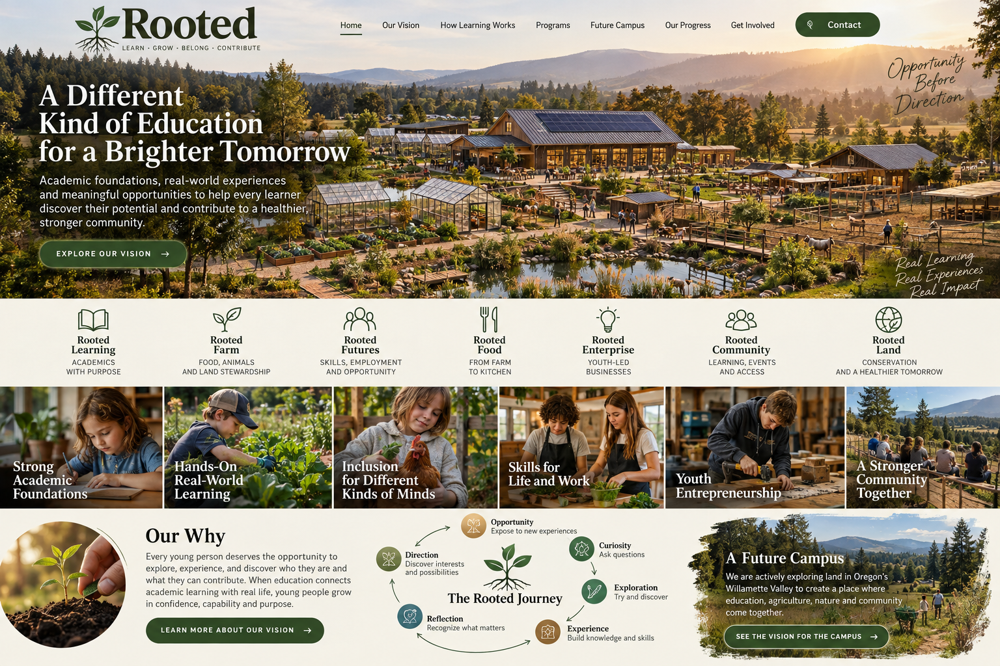
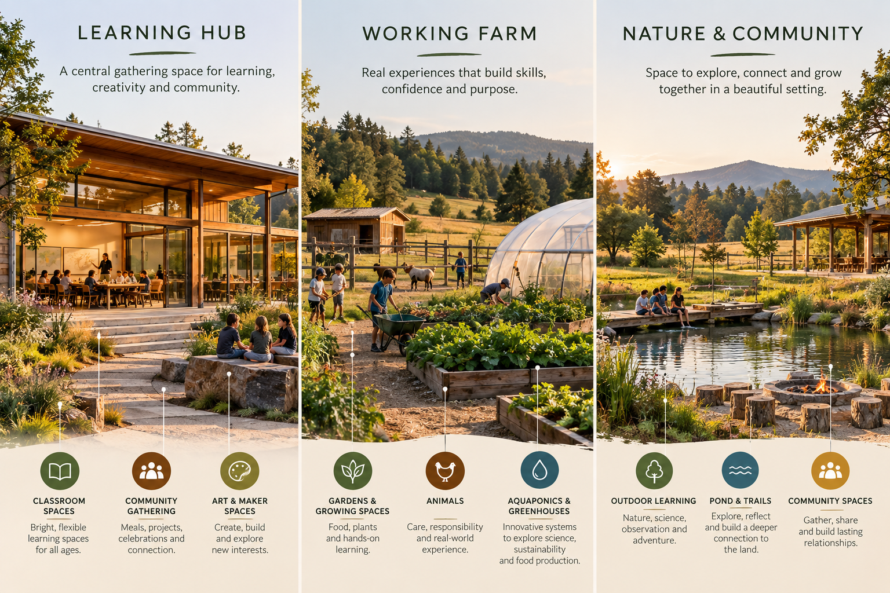
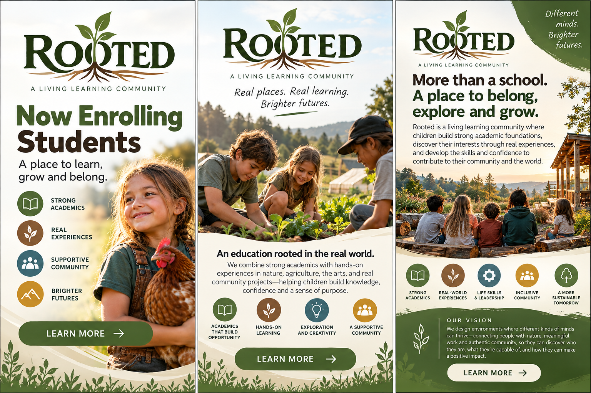

GROW / DISCOVER
The garden is a classroom
Soil, seeds, seasons, and the satisfaction of growing something real. Gardens and an orchard could connect everyday work with science, math, and food.
Start small. Watch what grows.A scrapbook for Amontae & Crystal
A place to gather our ideas for a living learning community. Nature, meaningful work, and room to discover who we can become.
Wander through our ideas
01 / Our vision
What if learning began with curiosity—and the world became the classroom?
Rooted is our emerging vision for a place where people learn by growing, making, caring, and exploring together. Strong academic foundations and hands-on experiences belong together. Intentional instruction in literacy, mathematics, science, and communication can sit alongside gardens, kitchens, workshops, and small enterprises that give learning purpose.
We imagine a community with space for different abilities, interests, and ways of learning. This scrapbook holds the possibilities while we work out what comes next.
Room to belong. Room to become.02 / The scrapbook
Things we’re imagining.
Nothing here has to be finished.
GROW / DISCOVER
Soil, seeds, seasons, and the satisfaction of growing something real. Gardens and an orchard could connect everyday work with science, math, and food.
Start small. Watch what grows.EXPLORE / CONNECT
Aquaponics could bring fish, plants, water, and technology into one hands-on learning experience. A place to ask questions and follow the connections.
Everything is connected.MAKE / BELONG
A kitchen, farm store, creative projects, and animal care could offer many ways to participate—each shaped around people’s strengths and interests.
Many ways to find your place.From our original scrapbook



03 / What’s next
These are conversation starters for us, not a fixed roadmap.
Bring our earlier conversations, images, and favorite ideas into one place.
Explore what we could try and learn from before building the whole dream.
Consider land, partnerships, resources, and what a welcoming learning environment needs.